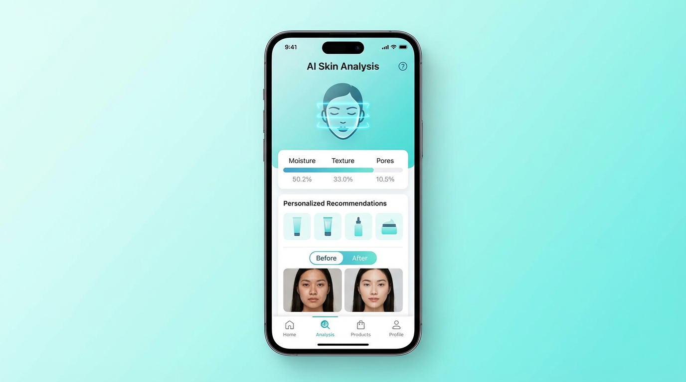
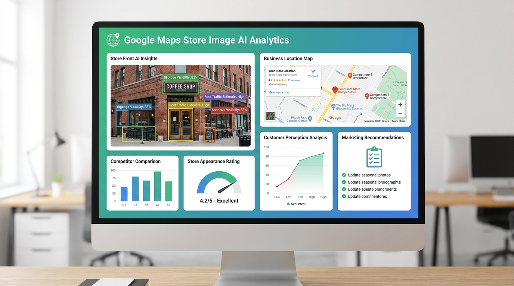
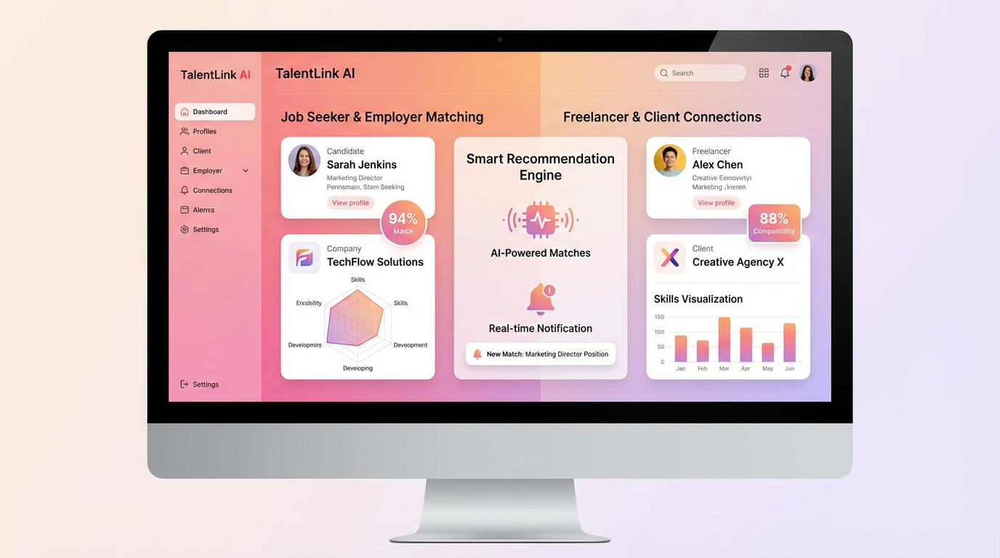
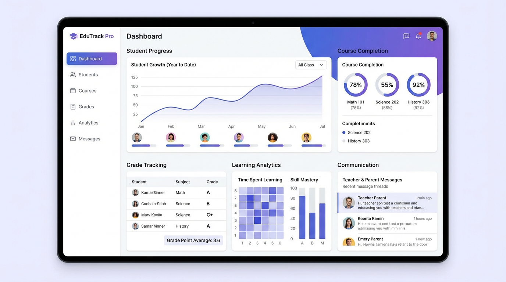
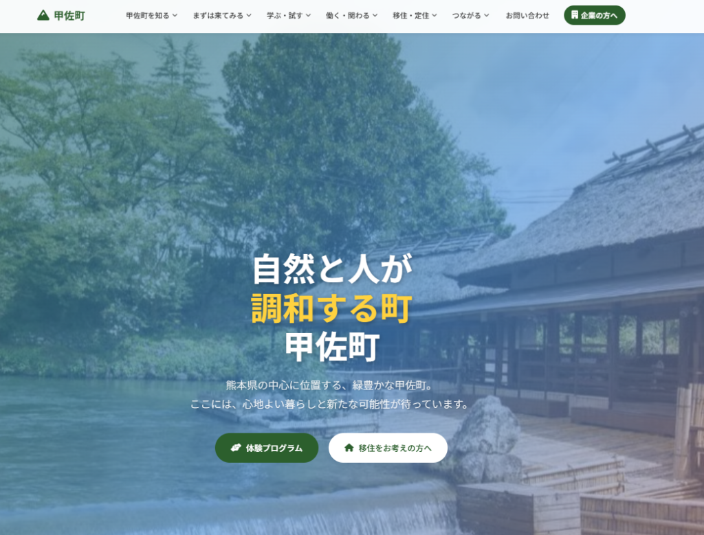
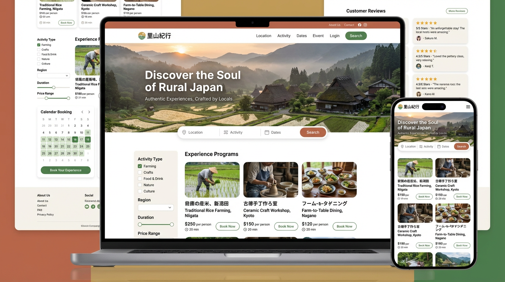
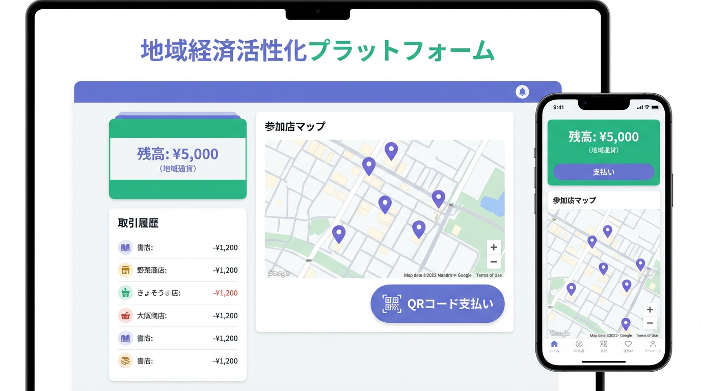

AIを活用したいが、自社の業務でどう使えるかイメージが湧かない
AI × 業務システム × MCP連携
AI活用を、企画から運用まで一貫支援する開発パートナー
「AIで何ができるのか分からない」「社内データを活かしたい」——そんな企業の課題に、AIサービス開発・業務システム開発・MCP連携をまとめてご相談いただけます。小さなPoCから本格導入まで、業務に使える形まで落とし込みます。
初回相談・お見積もり無料
最短2週間でPoC開始
非エンジニアの方もOK
01
AIサービス開発
生成AI・チャット・検索・要約など、事業価値につながるAIプロダクトを設計・開発します。
02
業務システム開発
既存の業務フローに沿った社内システム・管理画面・自動化ツールを構築します。
03
MCP連携構築
社内データ・既存システムをAIに安全につなぎ、業務で使えるAI環境を実現します。
対応できる領域
生成AIアプリ
RAG / 社内検索
業務自動化
MCPサーバー
基幹システム連携
PoC / 試作
運用・改善
Problem
こんなお悩み、ありませんか？
AI導入や業務システム開発では、「どこから手をつけていいか分からない」というご相談が多く寄せられます。まずは悩みを整理するところから、一緒に始めましょう。
社内に散らばったデータをAIに活用させたいが、技術面のハードルが高い
問い合わせ対応や定型業務を自動化し、人の時間を本質的な仕事に充てたい
既存の業務システムとAIをつなぎたいが、社内に開発できる人材がいない
まずは小さく試したいのに、相談先は大規模案件ばかりで話が進まない
導入したAIツールが現場で使われず、効果が出ていない
ひとつでも当てはまれば、まずは30分の無料相談で整理からご一緒します。
Services
当社ができること
AIサービスも業務改善システムもまとめてご相談可能です。「作って終わり」ではなく、業務に使える形まで落とし込む開発支援を行います。
SERVICE / 01
AIサービス開発
生成AIを使った新規プロダクト、社内向けAIアシスタント、RAGによる社内検索、画像・文書解析など、事業価値につながるAIサービスを企画から開発までワンストップで支援します。
SERVICE / 02
業務システム開発・導入支援
受発注・顧客管理・社内ポータルなど、現場の業務フローに沿ったシステムを設計・開発。AI機能の組み込みも柔軟に対応します。
SERVICE / 03
MCPサーバー構築・連携支援
社内データや既存システムをAIが安全に扱えるようにするMCP（Model Context Protocol）サーバーを構築。AIを「使えるAI」へ。
SERVICE / 04
AI活用コンサルティング
「何から始めるべきか」の整理から、業務棚卸し、ユースケース選定、費用対効果試算まで。非エンジニアの方にも分かる言葉でご説明します。
SERVICE / 05
運用・改善支援
開発して終わりではなく、現場で使われ続けるように、利用状況のモニタリングや継続的な機能改善まで伴走します。
Why Us
選ばれる理由
AIだけでも、システム開発だけでもない——両方を理解したチームが、現場で使える形まで伴走します。
企画から運用まで一貫して伴走
アイデア出し・要件整理から、開発・導入・運用改善までを一つのチームが担当。担当替えによる認識ズレがありません。
AI × 業務システム両方対応
AIモデルの選定だけでなく、連携する業務システムやデータ基盤まで設計。「現場で動く」AIを作れます。
非エンジニアにもわかりやすい説明
専門用語を噛み砕き、図やサンプルでお伝えします。現場の方・経営層の方どちらの会話にも合わせられます。
小さく始めて大きく育てる
最小構成のPoCから始めて、効果を見ながら段階的に拡張。初期投資を抑えてリスクを下げる進め方が可能です。
Examples
開発できる例
ご相談内容の一例です。貴社の業務に合わせてカスタマイズします。「こんなことできる？」という段階でもお気軽にどうぞ。

AI × 画像解析
AI美容診断アプリ
顔写真から肌質や悩みを分析し、パーソナライズされた美容アドバイスを提供するAIアプリ。

AI × マーケティング
店舗画像AI診断ツール
店舗の外観画像をAIが分析し、改善提案や競合比較を自動生成するマーケティングツール。

AI × 業務システム
AIマッチング管理システム
プロジェクトと人材を最適なアルゴリズムで自動マッチング。管理画面までまとめて構築。

業務システム
学習進捗管理システム
学習進捗を可視化し、関係者がリアルタイムで共有できる管理システム。MCPでデータ連携も可能。

Webサービス開発
地域コミュニティポータル
情報発信とユーザーをつなぐコミュニティプラットフォーム。CMS・会員機能もまとめて開発。

予約・決済システム
体験予約プラットフォーム
プログラムを検索・予約できるプラットフォーム。決済・在庫管理まで一気通貫で構築。

決済プラットフォーム
地域通貨管理プラットフォーム
通貨の発行・管理・利用を支援するプラットフォーム。権限制御・監査ログまで設計。
Achievements
開発実績・受賞歴
これまでに手掛けた試作品・本開発は300件以上。補助金採択・受賞・資金調達・事業化の実績があります。
300＋開発・試作品の実績数
20年＋開発パートナーとしての実績
85%試作品からの事業化成功率
最短7日PoC / 試作品の納品スピード
補助金採択
ものづくり補助金・IT導入補助金・事業再構築補助金など多数の採択支援実績。
受賞・登壇実績
ビジネスコンテスト・ピッチイベントでの受賞・登壇多数。
資金調達支援
VC資金調達・クラウドファンディング成功への寄与実績。
事業化実現
試作品から本開発へ移行し、実サービスとしてローンチした案件多数。
Flow
導入の流れ
最短2週間でPoCを開始できます。段階的に進めることで、リスクを抑えながら効果を確認できます。
01
無料相談
お悩みや実現したいことを伺い、現状の課題を整理します。技術的なご質問も歓迎です。
02
企画・要件整理
業務棚卸し・ユースケース選定・費用対効果試算を行い、最適なスコープをご提案します。
03
PoC / 試作
最小構成で素早く試作。現場で実際に触っていただき、効果と課題を見極めます。
04
本開発・導入
PoC結果をもとに本開発へ。既存システムとの連携・セキュリティ設計まで丁寧に行います。
05
運用・改善
利用状況をモニタリングし、継続的に改善。現場で使われ続けるAIに育てていきます。
小さく始めたい企業にも対応。 STEP 01〜03までをパッケージ化したPoCプランもご用意しています。まずはお気軽にご相談ください。
FAQ
よくあるご質問
ご相談前によく寄せられるご質問をまとめました。ここに無いご質問もお気軽にお問い合わせください。
QAIに詳しくないのですが、相談しても大丈夫ですか？
もちろん大丈夫です。「何から始めるべきか」を整理するところからご一緒します。専門用語は使わず、貴社の業務に合わせてご説明しますので、非エンジニアの方もお気軽にご相談ください。
Qまだ具体的なイメージがなくても依頼できますか？
問題ありません。「AIで何かできないか」「業務のここを改善したい」といったふわっとした段階のご相談が最も多く、そこから一緒にユースケースを洗い出していきます。
Qどのくらいの期間・費用で始められますか？
スコープによりますが、PoCは最短2週間から着手可能です。費用は要件ヒアリング後にお見積もりをご提示します。まずは無料相談で整理するところから始めましょう。
Q社内データをAIに使わせても安全ですか？
用途に応じて、クローズドな環境・権限制御・監査ログなどを設計します。MCPサーバーを介した安全な連携も得意領域です。セキュリティ要件もあわせてご相談ください。
Q既存の業務システムとの連携はできますか？
はい、API連携やデータ基盤設計まで対応します。基幹系・SaaS・社内DBなど、現状の構成に合わせて接続方法を設計します。
Q開発後の運用もお願いできますか？
継続的な運用保守・改善にも対応しています。利用状況のモニタリングや、現場からのフィードバックを踏まえた機能改善を伴走します。